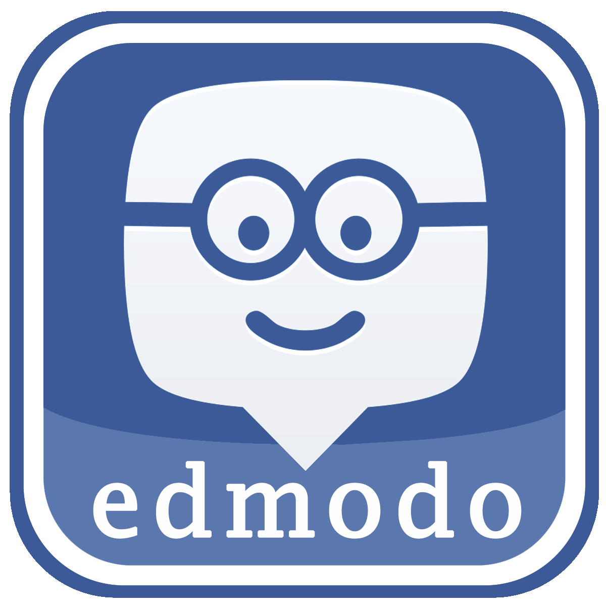
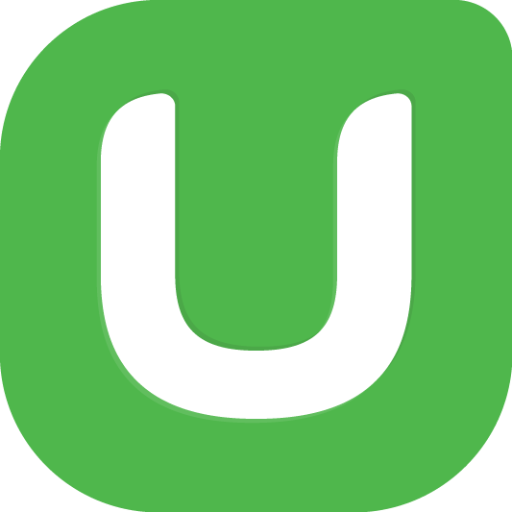

Internet in Academics
Edmodo
Edmodo is an educational technology company offering communication, collaboration, and coaching tools to K-12 schools and teachers. The Edmodo network enables teachers to share content, distribute quizzes, assignments, and manage communication with students, colleagues, and parents.
Edomodo is the intersection of social media, like Facebook and Google +, to education and academics. It is the first real connection between the two and it is a great way to get students more engaged and involved in their academics. It is a revolutionary way to think about education.
Coursera

Coursera is an education platform that partners with top universities and organizations worldwide, to offer courses online for anyone to take.
Coursera is one of the free online sources for learning tons of different subjects from world renowned professors around the globe. This provides education to many people for free and as long as they put in the work, they can learn almost anything they want. The only challenge is solving the problem of getting the classes to be accredited and actually count as credit.
Codecademy

Codecademy is an online interactive platform that offers free coding classes in 9 different programming languages including Python, Java, PHP, jQuery, JavaScript, AngularJS, and Ruby, as well as markup languages HTML and CSS.
Codecademy is one of the most popular free online school for learning code. It is a revolutionary way to allow anyone with access to the internet to learn the way of tech and work their way to the top.
Udemy
Udemy.com is a platform or marketplace for online learning. Unlike academic MOOC programs driven by traditional collegiate coursework, Udemy provides a platform for experts of any kind to create courses which can be offered to the public, either at no charge or for a tuition fee. Udemy provides tools which enable users to create a course, promote it and earn money from student tuition charges.
Udemy is one of the best resources for allowing not only students to learn but for teachers also to learn and get themselves known. It allows anyone to spread their knowldge.
Khanacademy

Khan Academy is a non-profit educational organization created in 2006 by educator Salman Khan to provide a free, world-class education for anyone, anywhere. The organization produces short lectures in the form of YouTube videos. In addition to micro lectures, the organization's website features practice exercises and tools for educators. All resources are available for free to anyone around the world.
Khan Academy is another free website for free educational classes.
The internet has made education available to almost anyone with internet access. It revolutionizes the way we see education because education is not something that is only accessible to the privileged or wealthy but to anyone that has a desire to learn.